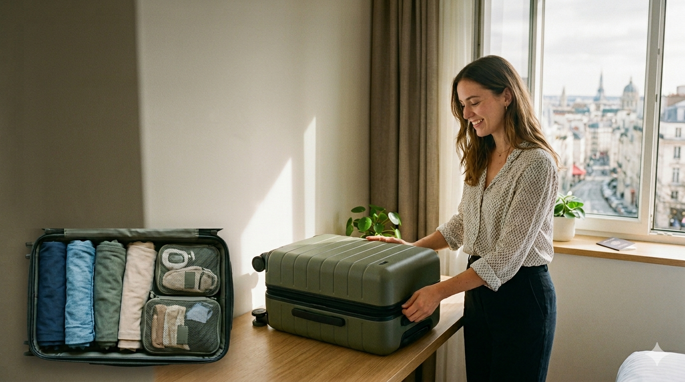

Master the Art of Packing Light
The ultimate travel hack? Leaving the "just in case" items behind. Rolling your clothes instead of folding them, choosing versatile layers, and sticking to a strict color palette will save you space, time, and heavy-lifting on your next adventure. By prioritizing tech essentials and multi-use gear, you can skip the baggage claim and move freely. Dive into our guide to learn how to streamline your suitcase and unlock the freedom of minimalist travel.